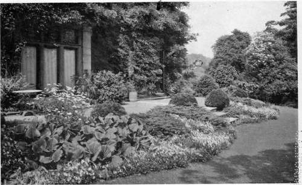

Landscape Gardening. Continued
Description
This section is from the book "What England Can Teach Us About Gardening", by Wilhelm Miller. Also available from Amazon: What England Can Teach Us About Gardening.
Landscape Gardening. Continued
So, too, with that other bugaboo — climate. Ask yourself, "What is the most precious thing that climate can give to the landscape? Is it this or that plant, or is it luxuriance?" Perhaps you would rather reply, " Trees a thousand years old," or " The exquisite finish of the English landscape and gardens." But if you will analyze both ideas you will find the root-idea is luxuriance. For if we plant the right kind of trees they will last a thousand years. Redwood has lasted that long in California and I dare say white oak in the North and live oak in the South.
Therefore, I lay down this bold challenge: We can get go per cent, of the English luxuriance in our own lifetime by planting our longest-lived native trees and shrubs. And if you don't believe it visit the estate of Professor Charles Sprague Sargent at Brookline, Mass.
Again, the exquisite finish of the English landscape is largely due to the extraordinary luxuriance of the grasses and wild flowers that cover every foot of the banks that line the roadsides. But we can get this same finish in our gardens, if not along the roadsides, largely by using edging plants to make a connection between the greenery of the grass and that of the trees. (See plate i and Chapter XXII.) For this purpose we need low-growing shrubs such as Deutzia gracilis, the Indian currant, Spiraea Van Houttei and Japanese barberry. Also we should carpet every foot of the ground with shallow-rooting plants that will give us another crop of flowers instead of bare earth or unsightly manure. These ideas are illustrated by the picture of bunchberry on plate 5 and by Chapter XXII.
WE CAN ATTAIN THE ENGLISH LUXURIANCE ONLY BY MAKING OUR NATIVE TREES DOMINANT; THEIR FINISH BY USING EDGING PLANTS. See page 6.
I will give you two examples of luxuriance and finish already attained in America in five years or less chiefly by transplanting large trees. First the Long Island home pictured on plate 3. A man who drove by this house when the place looked just as it did in the picture asked how long the house had been there. When told that the whole place was four years old, he replied, "You must be mistaken. It's forty if it's a day." I do not assert that this is a perfect place, but I do claim that it has at least 90 per cent, of the English luxuriance, while most Americans who have been to England believe we cannot get even 50 per cent. And as to finish, I have yet to see in England any greater perfection of detail than you can find in the formal garden of Mr. Larz Anderson at Brookline, Mass., which was fully described and pictured in Country Life in America for March, 1905, and again in March, 1906.
If, as individuals, we can get so much of the English luxuriance and finish in only five years, why worry about the other 10 per cent.? Those last ten degrees before perfection are very precious, but there is such a thing as paying too high a price for beauty. I saw an Englishwoman putting the finishing touches on a perfect garden for thirty-six cents a day. Would you have American labour paid like British labour? Would you be willing to entail the land in order to have perfect estates? Would you exchange a social democracy for a social aristocracy that the loveliest gardens might be preserved forever?
The only way in which we can surpass England is by loving our own trees, as they do theirs, and by planting more American than foreign material. The grandest proof of this is the Arnold Arboretum, which fits the New England landscape so perfectly that thousands of people drive through it without suspecting it is a collection of all the hardy trees and shrubs of the world. That is because the native oaks, elm, hawthorn, etc., are the bulk of the landscape material, instead of English oak, elm, and hawthorn, which are not long-lived in America. While we can reproduce nearly all the most important English effects we can never equal England along those lines. She can always excel us on finish; we can always excel her on variety and on autumn colours. We have ten oaks to her one, ten dogwoods, ten viburnums, ten maples, etc. We have been on the wrong track altogether, for we have supposed that the secret of England's loveliness is that she has the best materials for gardening, whereas the only fundamental thing England has to teach us is the spirit of gardening. This spirit, it seems to me, has three great lessons for us which the nation may take centuries to learn but which we, as individuals, may understand and apply at once.
First, no country can be supremely happy, healthy, and beautiful until every foot of it is a garden. We should limit the height of buildings in our cities and bring the country into them. Every home ought to have a garden. In England it is considered a disgrace not to have one. It is impossible to bring up children properly without a garden. We ought to live in our gardens a good part of the time and entertain our friends there, especially for the week-ends.
Second, landscape gardening is better for the masses than formal gardening. The object of formal gardening is to exhibit man's mastery over nature; the object of landscape gardening is to make us forget ourselves while contemplating a glorified portrait of nature. Therefore, landscape gardening is more restful and refreshing, since it makes the greatest contrast to the artificialities of city life. In the ripe judgment of many experienced travellers, England is the most beautiful country in the world. On this point I am not competent to express an opinion, but there can be no question that the distinctive beauty of English country scenery is due to the prevalence of landscape gardening. Formal gardening originated in Italy and was brought to perfection on the Continent. Landscape gardening was created in England and the essence of it is illustrated by plate 1.
SHOWING HOW 90 PER. CENT. OF THE ENGLISH LUXURIANCE HAS BEEN ATTAINED IN AMERICA IN FOUR YEARS BY MOVING A FEW LARGE TREES. ORDINARY SIZED BUSHFS HAVE DONE THE REST. MR. JOHN L. LAWRENCE, LAWRENCE, L. I. Seepages.
Third, the supreme quality in art is self-restraint. We overdo everything. We want what we want when we want it. We try to snatch the best of everything in life. We are willing to back our taste against all the architects and landscape gardeners that ever lived. We want a big show right off and our commonest fault is that we scatter showy trees and shrubs all over our home grounds, with the result that they are only museums. Every tree and bush pictured on plate 4 is the kind our newly rich buy in preference to native material. I mean the golden evergreens, the purple-leaved plum and other variegated shrubs, the weeping trees, cut-leaved bushes, and everything that has a strange form or colour. But in this garden of Colonel Hertford's, at Tetbury, these horticultural gems are not allowed to ruin the landscape, but are put in a garden by themselves, and they are combined in such a way as to make a picture.
And so — to make a long story short — we should be perfect beings in order to excel the British at this, their own game, or else we should employ perfect landscape gardeners — not mere architects, but men who love our native trees and shrubs and know how to combine them into home pictures that are not merely for show but inspiring to live with. In succeeding chapters I hope to show you a better series of pictures of English gardens than any you have ever seen. They were nearly all taken by Mr. E. J. Wallis, who is said to be one of the best garden photographers in England. You will please notice that many of the most "English" effects are produced by American plants. And except where the contrary is stated beneath a picture, every garden effect pictured in this book we can reproduce in America.
WHAT WE REALLY PLANT | WHAT WE OUGHT TO PLANT |
70% European trees and shrubs and horticultural varieties | 70% American trees and shrubs, i. native to America |
20% Chinese and Japanese | 20% Chinese and Japanese |
10% American | 10% European and horticultural |
And to paint these home pictures we need chiefly American material. We must face this deadly parallel:
Continue to:
Tags
garden, flowers, plants, England, effects, foliage, gardening